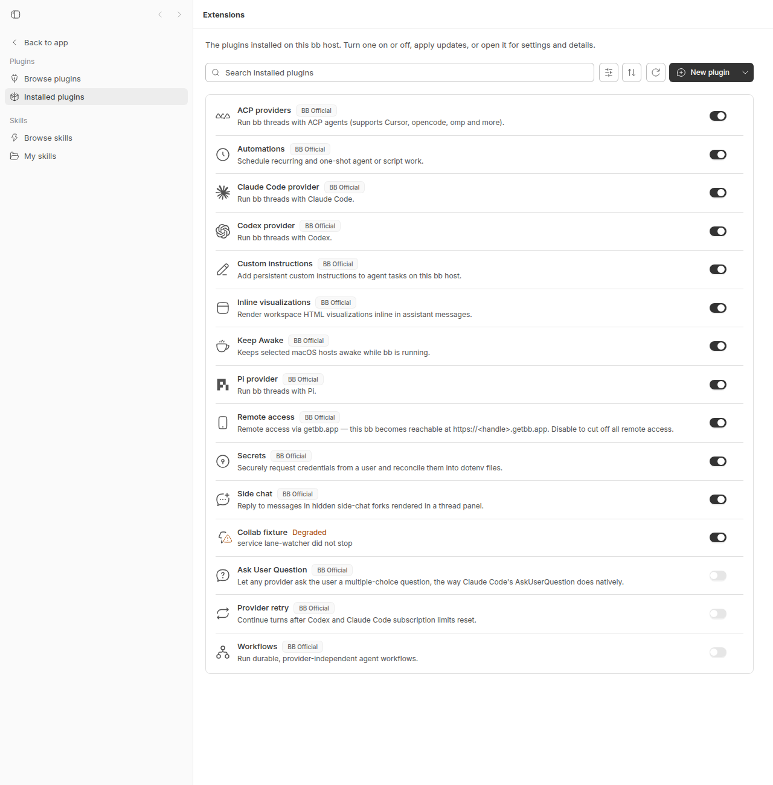

#2029 · Plugin reload: host rebuilds plugin artifacts into the deployed root, and orphaned services survive with closed handles while reload reports exit 0
Verdict: REPRODUCED (both defects, live on a dev instance at the base commit) · Root-cause confidence: high
1. TL;DR
Two separate behaviours, both real and both reproduced at c7c66423d.
Defect 1 — the host writes into a path-installed plugin's root. For path: installs the server treats dist/app.* as a cache of the source tree: it rebuilds the frontend bundle in place on install (always), and on every load (server start, bb plugin reload, bb plugin enable) when either any non-ignored file's mtime is newer than dist/app.js or the committed dist/app.meta.json records a different SDK version than the running host. This is deliberate design ("mutable plugin app artifacts are only a cache of their source tree"), not an accident, and it is covered by an existing unit test. Deploying a git checkout that commits dist/ therefore goes dirty the moment the host loads it. The reporter's mtime workaround only disables the first trigger; the SDK-version trigger still rewrites the files (repro step 5). The "output differs from committed bytes" part of the complaint (path comments like // .bb/worktrees/.../src/provider-marks.ts) is specific to 0.39.0, where the esbuild call had no absWorkingDir and no minify, so path comments were relative to the server process cwd; PR #1895 (on main, unreleased) minifies and pins absWorkingDir, so on main the rebuilt app.js/app.css are byte-identical and only dist/app.meta.json (builtWith.bbVersion) can differ.
Defect 2 — reload reports success for an unusable plugin. When a background service ignores its abort signal, the runtime waits 5 s, marks the plugin degraded, refuses to load the new instance (to avoid double-starting), closes the old instance's database handles, and returns normally. POST /api/v1/plugins/reload therefore answers {"ok":true} and bb plugin reload exits 0, while the plugin's CLI command is gone (error: unknown command 'collab') and the orphaned service keeps ticking against the closed handle (TypeError: The database connection is not open). The "degraded" state itself is the intended design; the missing piece is that the reload result does not carry that outcome, so automation cannot see it.
2. Claims vs findings
| Claim from the issue | Status | Evidence |
|---|---|---|
The host rebuilds dist/app.js/dist/app.css during plugin load when a source mtime exceeds dist/app.js, writing into the plugin root. | Verified | isMutableAppBundleStale + loadAppBundleCandidate; repro step 4(a): after touch src/provider-marks.ts, bb plugin reload rewrote all three dist/app.* files and logged rebuilding frontend bundle (plugin source is newer than dist/app.js). |
| The rebuilt output differs from committed bytes because it embeds absolute/cwd-relative paths. | Verified for 0.39.0; fixed-by-accident on main | 0.39.0's build had no absWorkingDir and no minify, so esbuild's // path comments were relative to process.cwd() (demo: esbuild-path-comments.log). #1895 (dbbb7640f, not in any release tag) adds absWorkingDir: rootDir and minify: true; on main only app.meta.json differs (repro steps 1, 4, 5: builtWith.bbVersion 0.39.0 → 0.0.0-dev). |
server.js is never rebuilt by this path; only app.*. | Verified | Path installs load the backend from source (resolveServerEntry); only buildPluginApp (and buildPluginHost when bb.host is declared) runs on load. Observed: in steps 1, 4 and 5 the dist/server.js mtime stays at its last bb plugin build/git checkout value while dist/app.* are rewritten next to it (in step 2 it changes only because git checkout wrote it, before the reload). |
| Timing: artifacts written ~13 s after the reload call returned. | Unverified | On main the rebuild is awaited inside loadOne before the route answers (step 4: files rewritten during the call). I could not reproduce a delayed write; possibly a second load (enable, server restart) in their deploy. |
Workaround: keep dist/ mtimes newer than all sources. | Verified but incomplete | Disables the mtime trigger only. Step 5: with every dist/* newer than every source but app.meta.json stamped sdkVersion 0.4.1, server start still rebuilt (built with SDK unknown, running SDK is 0.4.9). Also bb plugin install <path> always builds (step 1; apps/server/src/services/plugins/managed-plugin-artifacts.ts:330). |
A reload left the previous service resident, throwing capacity-interval-unreadable:TypeError: The database connection is not open every tick. | Verified | Step 3: after reload, bb plugin logs collab-fixture fills with exactly that TypeError once per second; disposePluginInstance closes database handles after the bounded service wait. |
bb plugin reload returned exit 0. | Verified | Step 3: exit=0; --json shows "ok": true. Route always answers ok (apps/server/src/routes/plugins.ts:451); CLI only fails on !ok or unknown id (apps/cli/src/commands/plugin.ts:1621). Unit repro issue-2029-reload-reports-success.test.ts fails on main at the last assertion. |
bb plugin list showed degraded (service lane-watcher did not stop). | Verified | Step 3 output and screenshot. |
The plugin's CLI command surface was entirely gone (error: unknown command 'collab'). | Verified | Step 3: bb collab → error: unknown command 'collab' exit 1; bb plugin run collab-fixture → plugin "collab-fixture" is not running (status: degraded — …). Cause: apps/server/src/services/plugins/plugin-runtime.ts:1575 deletes the plugin from loaded when the old service hung. |
A second reload cleared the degraded label; disable+enable cleared the orphan. | Unverified (plugin-dependent) | Recovery only happens once the hung start() promise settles (apps/server/src/services/plugins/plugin-runtime.ts:1298, onHungServiceSettled). My fixture's promise never settles, so the second reload, disable and enable all stayed degraded (step 3). The reporter's service must have settled between their calls; the interval behind it is never killed by the host either way. |
bb plugin list reported running for a period while a component was dead. | Unverified | Plausible paths: a failed reload keeps the previous instance and reports running (reload failed: …) (apps/server/src/services/plugins/plugin-runtime.ts:1288); a crashed service in backoff leaves plugin status running with the service state shown separately. Not reproduced. |
{kind=link}
3. Environment
- bb monorepo at
c7c66423d(branch main, 2026-08-20); origin/main (f4ab03f46) has three newer commits, all mobile UI (#2032, #2033, #2034), none touchingapps/server/src/services/plugins,apps/server/src/routes/plugins.ts,apps/cli/src/commands/plugin.tsorpackages/plugin-build. App version0.39.0(dev build reports0.0.0-dev), plugin SDK0.4.9. Issue was filed against 0.39.0 / SDK 0.4.1 on macOS. - Linux 7.0.0-29-generic, Node v24.18.0, pnpm workspace, esbuild 0.28.1.
- Own dev instance via
scripts/bb-dev-app current: serverhttp://localhost:22378, apphttp://localhost:14378, host daemon127.0.0.1:30378, data dir~/.bb-dev/projects-bb-.claude-worktrees-wf_926b3193-f6c-17-5f109972db34(deleted at cleanup). The logs below are from this instance (revision run); the first run on a sibling worktree (:19347) produced the same results. - Fixture plugin:
/tmp/bb2029-plugin(git repo withdist/committed), assembled by step0-fixture-setup.sh from 2029/repro/ (fixture-package.json→package.json,fixture-server.ts→src/server.ts,fixture-app.tsx→src/app.tsx,fixture-provider-marks.ts→src/provider-marks.ts).
4. Minimal reproduction
Fixture: a path plugin with a frontend entry (src/app.tsx importing src/provider-marks.ts), a CLI command bb collab, and a background service lane-watcher that captures bb.storage.database(), ticks every second, and ignores its abort signal (the reporter's lane-watcher behaviour). dist/ is built with bb plugin build and committed, so git status is the integrity check.
// Fixture for get-bb/bb#2029. Mirrors the reporter's "lane-watcher":
// a background service that keeps a reference to the plugin's database
// handle and ticks on an interval. It deliberately ignores its abort signal
// (a plugin bug, but one the host must survive).
export default function plugin(bb: any) {
const db = bb.storage.database();
db.exec("CREATE TABLE IF NOT EXISTS ticks (at INTEGER)");
bb.cli.register({
name: "collab",
summary: "collab fixture command",
run() {
return { exitCode: 0, stdout: "collab ok\n" };
},
});
bb.background.service("lane-watcher", {
start(_signal: AbortSignal) {
setInterval(() => {
try {
db.prepare("INSERT INTO ticks (at) VALUES (?)").run(Date.now());
} catch (error) {
bb.log.error("capacity-interval-unreadable:" + String(error));
}
}, 1000);
return new Promise<void>(() => {});
},
});
}
How to run the steps. Start your own dev instance from a bb checkout at c7c66423d (pnpm install --frozen-lockfile && pnpm exec turbo run build && scripts/bb-dev-app current), then in the shell that runs the steps:
export BB_WORKTREE=/path/to/your/bb/checkout # the checkout whose scripts/bb-dev-app current is running eval "$($BB_WORKTREE/scripts/bb-dev-app env)" # BB_SERVER_URL, BB_HOST_DAEMON_PORT, BB_PROJECT_ID # optional overrides: BB_CLI (default: node $BB_WORKTREE/packages/scripts/dist/commands/run-cli.js) # BB_DEV_LOG (default: the dev.log path printed by `$BB_WORKTREE/scripts/bb-dev-app status`) bash 2029/repro/step0-fixture-setup.sh
Steps 3, 4 and 5 each need a server that has no hung service from the previous step: run pnpm dev:stop && scripts/bb-dev-app current in the checkout and wait ~15 s before the step. Every step prints what it does and the CLI exit codes where those are the point.
- Assemble, build and commit the fixture — step0-fixture-setup.sh. Copies the four fixture files into
/tmp/bb2029-plugin(src/provider-marks.tssaysprovider-mark-v1), runsbb plugin build, commits everything includingdist/. Expected and actual:git statusclean.== bb plugin build /tmp/bb2029-plugin == dist/server.js dist/server.js.map dist/server.meta.json dist/app.js dist/app.css dist/app.meta.json == dist contents == total 24 drwxrwxr-x 2 sawyer sawyer 160 2026-08-20 14:41:51.988275918 +0000 . drwxrwxr-x 5 sawyer sawyer 140 2026-08-20 14:41:51.870630173 +0000 .. -rw-rw-r-- 1 sawyer sawyer 1899 2026-08-20 14:41:51.986627899 +0000 app.css -rw-rw-r-- 1 sawyer sawyer 87 2026-08-20 14:41:51.892629742 +0000 app.js -rw-rw-r-- 1 sawyer sawyer 216 2026-08-20 14:41:51.986627899 +0000 app.meta.json -rw-rw-r-- 1 sawyer sawyer 1041 2026-08-20 14:41:51.884629899 +0000 server.js -rw-rw-r-- 1 sawyer sawyer 1596 2026-08-20 14:41:51.884629899 +0000 server.js.map -rw-rw-r-- 1 sawyer sawyer 216 2026-08-20 14:41:51.886629859 +0000 server.meta.json == committed (git status --short must be empty) == d9c74f9 v1: fixture with committed dist
- Install from a clean checkout — step1-install.sh. Expected: the author's directory is untouched. Actual:
dist/app.js,dist/app.css,dist/app.meta.jsonare rewritten (mtimes) andapp.meta.jsondiffers in bytes.== before install: git status --short (empty = clean) == == dist mtimes before == -rw-rw-r-- 1 sawyer sawyer 1899 2026-08-20 14:41:51.986627899 +0000 app.css -rw-rw-r-- 1 sawyer sawyer 87 2026-08-20 14:41:51.892629742 +0000 app.js -rw-rw-r-- 1 sawyer sawyer 216 2026-08-20 14:41:51.986627899 +0000 app.meta.json -rw-rw-r-- 1 sawyer sawyer 1041 2026-08-20 14:41:51.884629899 +0000 server.js -rw-rw-r-- 1 sawyer sawyer 1596 2026-08-20 14:41:51.884629899 +0000 server.js.map -rw-rw-r-- 1 sawyer sawyer 216 2026-08-20 14:41:51.886629859 +0000 server.meta.json == bb plugin install /tmp/bb2029-plugin --yes == Installing bb-plugin-collab-fixture@0.1.0 from /tmp/bb2029-plugin Plugins are full-trust code running inside the BB server. They can read all local BB data, including other plugins' secrets. Installed: collab-fixture@0.1.0 running source: path:/tmp/bb2029-plugin service lane-watcher: running command: bb collab — collab fixture command == after install: git status --short == M dist/app.meta.json == git diff == diff --git a/dist/app.meta.json b/dist/app.meta.json index 36591ef..658daf9 100644 --- a/dist/app.meta.json +++ b/dist/app.meta.json @@ -5,7 +5,7 @@ "pluginId": "collab-fixture", "pluginVersion": "0.1.0", "builtWith": { - "bbVersion": "0.39.0", + "bbVersion": "0.0.0-dev", "pluginSdkVersion": "0.4.9" } } == dist mtimes after == -rw-rw-r-- 1 sawyer sawyer 1899 2026-08-20 14:41:58.421501760 +0000 app.css -rw-rw-r-- 1 sawyer sawyer 87 2026-08-20 14:41:58.410501976 +0000 app.js -rw-rw-r-- 1 sawyer sawyer 219 2026-08-20 14:41:58.422501741 +0000 app.meta.json -rw-rw-r-- 1 sawyer sawyer 1041 2026-08-20 14:41:51.884629899 +0000 server.js -rw-rw-r-- 1 sawyer sawyer 1596 2026-08-20 14:41:51.884629899 +0000 server.js.map -rw-rw-r-- 1 sawyer sawyer 216 2026-08-20 14:41:51.886629859 +0000 server.meta.json - Deploy by
git checkoutthen reload — step2-deploy-reload.sh. Here git wrotedist/app.jsandsrc/provider-marks.tswith identical mtimes, so the mtime gate was not satisfied and no rebuild happened; the step instead surfaces defect 2 (reload →degraded,exit=0). Whether a checkout trips the gate depends on write ordering and timestamp granularity, which is the "undocumented internal condition" the issue describes.== author a new version: edit src/provider-marks.ts, bb plugin build, commit (v2) == v1=d9c74f9 v2=f3fe72a == deploy: git checkout v1, then git checkout v2 (what a deploy does on the host) == == git status after checkout (clean) == == mtimes after checkout: git writes files in index order, dist/ before src/ == 2026-08-20 14:42:02.585420134 +0000 dist/app.js 2026-08-20 14:41:51.671300923 +0000 src/app.tsx 2026-08-20 14:42:02.585420134 +0000 src/provider-marks.ts 2026-08-20 14:41:51.670020634 +0000 src/server.ts == sha256 of committed dist before reload == a7ca6f1b4131f93bd0d6f48640465ccd5b5f2cd8d2083142bc844b67f389b579 dist/app.js 6fb89e29f98d48b2bf3285b51e79c7f21a89f929d8a92f634aff27ff0cecdbdb dist/app.css f7a63a24cb59b7d1a5c5cee5d415664c111d8cec2adc6f3c85fe8f9fbc461aef dist/app.meta.json == bb plugin reload collab-fixture == collab-fixture@0.1.0 degraded (service lane-watcher did not stop) source: path:/tmp/bb2029-plugin exit=0 == git status after reload == == git diff after reload == == mtimes after reload == 2026-08-20 14:42:02.585420134 +0000 dist/app.js 2026-08-20 14:42:01.554440345 +0000 dist/app.css 2026-08-20 14:42:01.554440345 +0000 dist/app.meta.json 2026-08-20 14:42:01.465442089 +0000 dist/server.js == sha256 after reload == a7ca6f1b4131f93bd0d6f48640465ccd5b5f2cd8d2083142bc844b67f389b579 dist/app.js 6fb89e29f98d48b2bf3285b51e79c7f21a89f929d8a92f634aff27ff0cecdbdb dist/app.css f7a63a24cb59b7d1a5c5cee5d415664c111d8cec2adc6f3c85fe8f9fbc461aef dist/app.meta.json
- Orphaned service, exit 0, command surface gone — step3-orphan.sh (run against a freshly started server). Expected: a reload that leaves the plugin unusable fails its exit code. Actual:
exit=0,"ok": true,bb collab→unknown command, plugin log fills withTypeError: The database connection is not open, and the count keeps growing afterdisable/enable.== before: bb plugin list (collab-fixture) == collab-fixture@0.1.0 running source: path:/tmp/bb2029-plugin service lane-watcher: running command: bb collab — collab fixture command == before: bb collab == collab ok exit=0 == bb plugin reload collab-fixture == collab-fixture@0.1.0 degraded (service lane-watcher did not stop) source: path:/tmp/bb2029-plugin handlers: 1 calls / 0ms total / 0ms max exit=0 == bb plugin reload --json collab-fixture (ok flag) == { "ok": true, "plugins": [ { "id": "ask-user-question", "source": "builtin:ask-user-question", "rootDir": "/home/sawyer/projects/bb/.claude/worktrees/wf_926b3193-f6c-17/plugins/ask-user-question", "version": "0.1.0", "provenance": "builtin", "isOrphanedBuiltin": false, "publisherLabel": "BB Official", "sourceDisplay": "builtin · ask-user-que exit=0 == after: bb plugin list (collab-fixture) == collab-fixture@0.1.0 degraded (service lane-watcher did not stop) source: path:/tmp/bb2029-plugin handlers: 1 calls / 0ms total / 0ms max connect@0.1.0 running == after: bb collab == error: unknown command 'collab' exit=1 == after: bb plugin run collab-fixture == plugin "collab-fixture" is not running (status: degraded — service lane-watcher did not stop) exit=1 == plugin log (bb plugin logs collab-fixture, last 3) == {"ts":1787236980145,"level":"error","message":"capacity-interval-unreadable:TypeError: The database connection is not open"} {"ts":1787236981145,"level":"error","message":"capacity-interval-unreadable:TypeError: The database connection is not open"} {"ts":1787236982147,"level":"error","message":"capacity-interval-unreadable:TypeError: The database connection is not open"} == count of 'database connection is not open' lines == 13 == server log lines for collab-fixture == @bb/server:dev: [14:42:32] INFO: [server] plugin collab-fixture@0.1.0 loaded @bb/server:dev: [14:42:56] WARN: [server] [plugin:collab-fixture] service lane-watcher did not stop within 5000ms — plugin degraded until it does @bb/server:dev: [14:42:56] WARN: [server] plugin collab-fixture not loaded (degraded): service lane-watcher did not stop == disable + enable == collab-fixture@0.1.0 disabled (service lane-watcher did not stop) source: path:/tmp/bb2029-plugin handlers: 1 calls / 0ms total / 0ms max exit=0 collab-fixture@0.1.0 degraded (service lane-watcher did not stop) source: path:/tmp/bb2029-plugin handlers: 1 calls / 0ms total / 0ms max exit=0 == after enable: count of 'database connection is not open' lines (still growing?) == 17 20
App → Extensions → Installed plugins after step 3: "Collab fixture — Degraded — service lane-watcher did not stop". The CLI that produced it exited 0. - Reload rebuilds into the root when a source is newer — step4-reload-rebuild.sh (fresh server). Part (a) reproduces:
touch src/provider-marks.ts+ reload rewrotedist/app.*(and leftdist/server.jsuntouched), log linerebuilding frontend bundle (plugin source is newer than dist/app.js). Part (b) did not fire in this run only because the same reload had already left the plugin hung (hung check precedes the rebuild); it is re-run cleanly as step 5.== (a) source newer than dist/app.js: touch src/provider-marks.ts, then reload == (git clean above) 2026-08-20 14:42:02.585420134 +0000 dist/app.js 2026-08-20 14:42:01.465442089 +0000 dist/server.js 2026-08-20 14:43:46.163389660 +0000 src/provider-marks.ts collab-fixture@0.1.0 degraded (service lane-watcher did not stop) -- dist mtimes after reload -- 2026-08-20 14:43:46.387385269 +0000 dist/app.js 2026-08-20 14:43:46.478383485 +0000 dist/app.css 2026-08-20 14:43:46.479383466 +0000 dist/app.meta.json 2026-08-20 14:42:01.465442089 +0000 dist/server.js -- git status / diff after reload -- M dist/app.meta.json diff --git a/dist/app.meta.json b/dist/app.meta.json index 36591ef..658daf9 100644 --- a/dist/app.meta.json +++ b/dist/app.meta.json @@ -5,7 +5,7 @@ "pluginId": "collab-fixture", "pluginVersion": "0.1.0", "builtWith": { - "bbVersion": "0.39.0", + "bbVersion": "0.0.0-dev", "pluginSdkVersion": "0.4.9" } } @bb/server:dev: [14:43:46] INFO: [server] plugin collab-fixture: rebuilding frontend bundle (plugin source is newer than dist/app.js) == (b) committed meta says another SDK version; dist mtimes are NEWER than every source == -- newest source vs dist/app.js -- 2026-08-20 14:41:51.670020634 +0000 src/server.ts 2026-08-20 14:41:51.671300923 +0000 src/app.tsx 2026-08-20 14:42:01.465442089 +0000 dist/server.js 2026-08-20 14:43:46.163389660 +0000 src/provider-marks.ts 2026-08-20 14:43:51.531284428 +0000 dist/app.js (git clean above) collab-fixture@0.1.0 degraded (service lane-watcher did not stop) -- git status / diff after reload -- @bb/server:dev: [14:43:46] INFO: [server] plugin collab-fixture: rebuilding frontend bundle (plugin source is newer than dist/app.js) - SDK-version trigger defeats the mtime workaround — step5-sdk-mismatch.sh. Committed
app.meta.jsonstampedsdkVersion 0.4.1(the reporter's SDK), everydist/*touched newer than every source, server restarted. Actual: rebuilt on load anyway (dist/app.*rewritten,dist/server.jsuntouched); checkout dirty. The log saysbuilt with SDK unknownrather than0.4.1because the simulated meta only changed the top-levelsdkVersion, and parsePluginArtifactMeta rejects a meta whosebuiltWith.pluginSdkVersion(still 0.4.9) differs fromsdkVersion, soreadPluginAppBundleMetareturnsnull; a genuine 0.4.1-built artifact would parse and logbuilt with SDK 0.4.1. Either waymeta?.sdkVersion !== PLUGIN_SDK_VERSIONis true and the rebuild fires.== committed meta == "sdkVersion": "0.4.1", "bbVersion": "0.39.0", == mtimes: every dist file newer than every source == 2026-08-20 14:41:51.670020634 +0000 src/server.ts 2026-08-20 14:41:51.671300923 +0000 src/app.tsx 2026-08-20 14:42:01.465442089 +0000 dist/server.js 2026-08-20 14:43:46.163389660 +0000 src/provider-marks.ts 2026-08-20 14:44:16.934786434 +0000 dist/app.js 2026-08-20 14:44:17.018784788 +0000 dist/app.css 2026-08-20 14:44:17.018784788 +0000 dist/app.meta.json == bb plugin list == collab-fixture@0.1.0 running source: path:/tmp/bb2029-plugin == git status / diff after the server loaded the plugin == M dist/app.meta.json diff --git a/dist/app.meta.json b/dist/app.meta.json index 0cee571..658daf9 100644 --- a/dist/app.meta.json +++ b/dist/app.meta.json @@ -1,11 +1,11 @@ { "sdkMajor": 0, - "sdkVersion": "0.4.1", + "sdkVersion": "0.4.9", "artifactFormatVersion": 1, "pluginId": "collab-fixture", "pluginVersion": "0.1.0", "builtWith": { - "bbVersion": "0.39.0", + "bbVersion": "0.0.0-dev", "pluginSdkVersion": "0.4.9" } } == dist mtimes after load (server.js untouched) == 2026-08-20 14:44:16.934786434 +0000 dist/app.js 2026-08-20 14:44:17.018784788 +0000 dist/app.css 2026-08-20 14:44:17.018784788 +0000 dist/app.meta.json 2026-08-20 14:42:01.465442089 +0000 dist/server.js == server log == @bb/server:dev: [14:44:16] INFO: [server] plugin collab-fixture: rebuilding frontend bundle (built with SDK unknown, running SDK is 0.4.9) - Unit-level repro of defect 2 — apps/server/test/services/plugins/issue-2029-reload-reports-success.test.ts, run with
pnpm exec vitest run test/services/plugins/issue-2029-reload-reports-success.test.tsfromapps/server. Every observation assertion passes (degraded, API gone, closed-handle errors > 0); the final assertion, "reload() must not resolve as success", fails on main:× leaves the plugin unloaded with its CLI gone, yet reload() resolves (reports success) 469ms ⎯⎯⎯⎯⎯⎯⎯ Failed Tests 1 ⎯⎯⎯⎯⎯⎯⎯ FAIL @bb/server test/services/plugins/issue-2029-reload-reports-success.test.ts > issue 2029: reload of a plugin whose service ignores abort > leaves the plugin unloaded with its CLI gone, yet reload() resolves (reports success) AssertionError: reload() resolved although the plugin is degraded and unloaded: expected null not to be null ❯ test/services/plugins/issue-2029-reload-reports-success.test.ts:115:95 113| // Expected by the reporter (and by any automated deploy): a reloa… 114| // leaves the plugin unusable must not report success. 115| expect(reloadError, "reload() resolved although the plugin is degr… | ^ 116| }); 117| }); ⎯⎯⎯⎯⎯⎯⎯⎯⎯⎯⎯⎯⎯⎯⎯⎯⎯⎯⎯⎯⎯⎯⎯⎯[1/1]⎯// Repro for get-bb/bb#2029 (defect 2): `pluginService.reload(id)` resolves // normally when the plugin's previous service did not stop, even though the // outcome is "plugin unloaded, degraded, CLI command gone". The HTTP route // (POST /plugins/reload) and `bb plugin reload` therefore report ok:true / // exit 0. The last assertion FAILS on main (c7c66423d) because reload resolves. import { mkdtemp, mkdir, rm, writeFile } from "node:fs/promises"; import { tmpdir } from "node:os"; import { join } from "node:path"; import { afterEach, beforeEach, describe, expect, it } from "vitest"; import { createConnection, migrate, type DbConnection } from "@bb/db"; import type { Logger } from "@bb/logger"; import { createPluginService, type PluginService, } from "../../../src/services/plugins/plugin-service.js"; import { testLogger } from "../../helpers/test-app.js"; import { createNoopTelemetryService } from "../../../src/services/system/telemetry.js"; const logger = testLogger as unknown as Logger; describe("issue 2029: reload of a plugin whose service ignores abort", () => { let db: DbConnection; let workDir: string; let service: PluginService; beforeEach(async () => { db = createConnection(":memory:"); migrate(db); workDir = await mkdtemp(join(tmpdir(), "bb-2029-")); service = createPluginService({ telemetry: createNoopTelemetryService(), db, hub: { getDaemonSessionIdForHost: () => null, notifyPluginSignal: () => 0, notifySystem: () => {}, }, logger, dataDir: join(workDir, "data"), appVersion: "0.9.0", loadTimeoutMs: 2000, serviceStopTimeoutMs: 100, serviceRestartBaseMs: 5, }); }); afterEach(async () => { await service.stop(); await rm(workDir, { recursive: true, force: true }); }); it("leaves the plugin unloaded with its CLI gone, yet reload() resolves (reports success)", async () => { const rootDir = join(workDir, "bb-plugin-collab"); await mkdir(rootDir, { recursive: true }); await writeFile( join(rootDir, "package.json"), JSON.stringify({ name: "bb-plugin-collab", version: "0.1.0", bb: { name: "collab", description: "fixture", branding: { icon: "Zap" }, server: "./server.ts", }, }), ); await writeFile( join(rootDir, "server.ts"), ` export default function plugin(bb: any) { const db = bb.storage.database(); db.exec("CREATE TABLE IF NOT EXISTS ticks (at INTEGER)"); bb.cli.register({ name: "collab", summary: "collab", run() { return { exitCode: 0, stdout: "ok" }; } }); bb.background.service("lane-watcher", { start() { const g = globalThis as any; g.__2029ticks = 0; g.__2029closedErrors = 0; const timer = setInterval(() => { try { db.prepare("INSERT INTO ticks (at) VALUES (?)").run(Date.now()); g.__2029ticks += 1; } catch (e) { g.__2029closedErrors += 1; } }, 20); (timer as any).unref?.(); return new Promise<void>(() => {}); // ignores abort forever }, }); } `, ); const installed = await service.installPath(rootDir); expect(installed.status).toBe("running"); expect(service.getApi("collab")).toBeDefined(); // What `bb plugin reload collab` does. It resolves; the route then answers // { ok: true } and the CLI exits 0. let reloadError: unknown = null; try { await service.reload("collab"); } catch (error) { reloadError = error; } const entry = service.list().find((p) => p.id === "collab"); expect(entry?.status).toBe("degraded"); expect(entry?.statusDetail).toContain("service lane-watcher did not stop"); // The plugin is unloaded: no API handle -> `bb collab` is "unknown command". expect(service.getApi("collab")).toBeUndefined(); // The orphaned service keeps ticking on the closed database handle. await new Promise((resolve) => setTimeout(resolve, 200)); const g = globalThis as Record<string, unknown>; expect(g.__2029closedErrors as number).toBeGreaterThan(0); // Expected by the reporter (and by any automated deploy): a reload that // leaves the plugin unusable must not report success. expect(reloadError, "reload() resolved although the plugin is degraded and unloaded").not.toBeNull(); }); });
Repro files: 2029/repro/
5. Root cause
Defect 1: path-install artifacts are a host-owned cache living in the author's directory
Three code paths write dist/app.* into a path plugin's root:
- Install: managed-plugin-artifacts.ts:330-352 — for every non-npm, non-packaged-builtin plugin with
bb.app,validateInstallDircallsbuildPluginApp(args.rootDir, …)unconditionally. The comment above it says "path: the author owns that directory … only the frontend is built", i.e. the write is intentional. - Load (server start, reload, enable): plugin-runtime.ts:1085-1124 —
loadAppBundleCandidaterebuilds whenmeta?.sdkVersion !== PLUGIN_SDK_VERSION(any difference, including a meta it cannot parse —readPluginAppBundleMetareturnsnullfor a missing or malformedapp.meta.jsonor one whosebuiltWith.pluginSdkVersiondisagrees withsdkVersion, which is why step 5 logsbuilt with SDK unknown) or when isMutableAppBundleStale finds any file or directory (excludingdist,node_modules,.git) withmtimeMs > dist/app.js mtimeMs. The docstring states the policy: "Mutable plugin app artifacts are only a cache of their source tree." - Load, host bundle: loadHostArtifactCandidate — when
bb.hostis declared,buildPluginHostruns on every load with no staleness check at all (not exercised by the reporter's plugin, but the same class of write).
The build itself (buildPluginApp) stages under dist/.stage-* and renames into dist/app.js, dist/app.css, dist/app.meta.json. app.meta.json always embeds builtWith.bbVersion from the running host, so even a bit-identical JS/CSS rebuild changes that file whenever the host's version differs from the one that produced the commit (0.39.0 → 0.0.0-dev in every step above). In 0.39.0 the esbuild call (desktop-v0.39.0 build-plugin-app.ts:494 at tag desktop-v0.39.0) had no absWorkingDir and no minify, so esbuild's // <path> comments were computed relative to the server process's cwd — for a macOS app launched from ~, // .bb/worktrees/env_…/bb-collab/src/provider-marks.ts, exactly the diff in the issue. #1895 (dbbb7640f, on main, no release tag yet) sets absWorkingDir: rootDir and minify: true; the comments disappear and JS/CSS become location-independent. The write-into-root behaviour is unchanged by #1895.
Why the reporter saw drift "on the next deploy": git checkout writes changed paths in index order (dist/… before src/…), so a commit that touches both can leave sources newer than dist/app.js; whether it does depends on filesystem timestamp granularity (identical ns timestamps in step 2 here, but APFS/macOS and larger trees differ). And independent of mtimes, an artifact built by a different SDK version is rebuilt on first load after any host upgrade — so their 0.4.1-built bundle will be rewritten the moment the host ships a newer SDK, regardless of the mtime workaround.
Defect 2: the hung-service outcome never reaches the reload result
reload(id)(apps/server/src/services/plugins/plugin-service.ts:1778) callsloadOne(row)and returnsvoid; the route (apps/server/src/routes/plugins.ts:451) returns{ ok: true, plugins: list() }unconditionally; the CLI (apps/cli/src/commands/plugin.ts:1621) exits non-zero only whenokis false or the id is unknown. Plugin status is printed but never inspected.- Inside
loadOne, when a previous instance exists, apps/server/src/services/plugins/plugin-runtime.ts:1575 runsdisposePluginInstance, which callsstopServices(apps/server/src/services/plugins/plugin-runtime.ts:639): abort every service, waitserviceStopTimeoutMs(5000 ms, apps/server/src/services/plugins/plugin-runtime.ts:321), and on timeout record the service inhungServices, set statusdegraded, and move on.disposePluginInstancethen closes the old instance's database handles (apps/server/src/services/plugins/plugin-runtime.ts:1684) and invalidates the API handle — so the still-running orphan's nextdb.prepare(...)throwsTypeError: The database connection is not open; this is the documented contract ("The host closes handles on dispose/reload; a closed handle throws on use", packages/plugin-sdk/src/backend-contract.ts:117). - Back in
loadOne, becausehungServicesis non-empty the new instance is discarded (loaded.delete, its handles closed,return) so the plugin is now unloaded: no CLI registration (→unknown command 'collab'), no routes, no API. Every laterloadOne(reload, enable, and even server-lifetime) short-circuits at apps/server/src/services/plugins/plugin-runtime.ts:1298 until the hung promise settles. - None of that is propagated: no throw, no field on the route payload, no non-zero exit. The only signals are the log line
service lane-watcher did not stop within 5000msand thedegradedstatus, which the CLI prints and then exits 0.
Underlying/related: the host has no way to stop an orphaned timer or socket owned by plugin code that ignored abort; it can only refuse to double-start. While checking this I also observed (with an earlier fixture revision whose catch block referenced a non-existent bb.logger) that an exception thrown inside the orphan's setInterval callback after reload killed the entire bb server process (server-crash-from-orphan-timer.log). There is no process-level uncaughtException guard in apps/server/src; this is the subject of #1746.
6. Proposed fix (first principles)
Defect 2 (small, contained)
- Make
PluginService.reload(id)return the per-plugin outcome instead ofvoid— e.g. the reloadedPluginListEntrylist — and havePOST /plugins/reloadanswerok: false(still HTTP 200 or 409) witherror: 'plugin "x" degraded: service lane-watcher did not stop'whenever any targeted plugin ended indegraded/error/incompatible/missing, or when a reload kept the previous instance (reload failed: …detail). The CLI then exits 1 through the existing!result.okpath (apps/cli/src/commands/plugin.ts:1640) with the detail printed; the existing unit repro turns green by asserting a rejected/failed outcome. Keep the runtime's degraded policy as is. Risk:bb plugin devand the builtin watcher loop use the same route and currently tolerate a degraded outcome silently — they should log it, not loop. No wire change to the host daemon, so no protocol bump. - Optionally, after the bounded wait, keep surfacing progress: log each
onHungServiceSettled(already done) and, inbb plugin list, append "reload again to recover" — cosmetic.
Defect 1 (design decision, larger)
- Build path-install frontend/host artifacts into a host-owned cache keyed by root path (e.g.
<dataDir>/plugin-app-cache/<hash(rootDir)>/), the same way managedgit:/npm:artifacts already live under the data dir (install-sources.ts npmArtifactCacheDir/gitArtifactCacheDir).loadPluginAppBundle/getAppAssetwould read from that cache;buildPluginAppalready accepts a root and writes to<root>/dist, so it needs an explicitoutDirparameter (the Tailwind scanner'sdist/**exclusion must then also exclude the cache dir, which is trivially outside the root). The staleness rule can stay but compare against the cache file. This removes every write into the author's directory on install and load;bb plugin buildandbb plugin devkeep writingdist/explicitly because the author asked for it. - If that is too large: (a) stop calling
buildPluginAppinvalidateInstallDirforpathinstalls when a compatibledist/app.meta.jsonis already present; (b) inloadAppBundleCandidatetreat a present, SDK-compatible, non-stale committed artifact as authoritative and make the rebuild opt-in via a manifest flag (#1863 asks for the inverse: a plugin-supplied build command); (c) document the two triggers (mtime >dist/app.js,sdkVersionmismatch) in the plugin docs so deployers can reason about them. - Not worth doing: making the rebuild reproduce committed bytes. #1895 already made JS/CSS location-independent;
app.meta.jsonintentionally records the host that built it.
7. PR review
No open PR is linked to this issue.
8. Related issues
- #1863 — same reporter, same defect 1 on 0.38.0 ("bb plugin reload rebuilds a path plugin with the host build, with no way for the plugin to supply its own"). #2029's defect 1 is effectively a duplicate with the added byte-diff/mtime observations.
- #1746 — "Plugin background services can kill the server: supervisor only sees the promise chain"; the orphan-timer crash observed here is that failure mode.
- PR #1895 — minifies plugin app bundles and pins
absWorkingDir; removes the cwd-relative path comments from rebuilt output (not yet in a release).
9. Appendix
Commands run
cd <worktree> && pnpm install --frozen-lockfile --prefer-offline && pnpm exec turbo run build scripts/bb-dev-app current # server :22378, app :14378, host daemon :30378 export BB_WORKTREE=$PWD && eval "$(scripts/bb-dev-app env)" bash 2029/repro/step0-fixture-setup.sh # assemble fixture at /tmp/bb2029-plugin, bb plugin build, commit dist bash 2029/repro/step1-install.sh # install rewrites dist/app.* bash 2029/repro/step2-deploy-reload.sh # checkout + reload pnpm dev:stop && scripts/bb-dev-app current # fresh server (clears hung service) bash 2029/repro/step3-orphan.sh # reload -> degraded, exit 0, command gone, closed-handle errors pnpm dev:stop && scripts/bb-dev-app current bash 2029/repro/step4-reload-rebuild.sh # touch src -> reload rebuilds pnpm dev:stop && scripts/bb-dev-app current # step4(b) already committed sdkVersion 0.4.1 and touched dist/* bash 2029/repro/step5-sdk-mismatch.sh # rebuild despite dist newest cd apps/server && pnpm exec vitest run test/services/plugins/issue-2029-reload-reports-success.test.ts doobie --headless < 2029/repro/shot.js # screenshot
esbuild path-comment demonstration (0.39.0 vs main build options)
--- 0.39.0-style build (no absWorkingDir, no minify), process.cwd()=/home/sawyer
// ../../tmp/bb2029-plugin/src/provider-marks.ts
var MARK = "provider-mark-v2";
// ../../tmp/bb2029-plugin/src/app.tsx
function setup(_app) {
globalThis.__collabMark = MARK;
}
export {
setup as default
};
--- same, absWorkingDir=/tmp/bb2029-plugin (what bb plugin build does when cwd differs)
// src/provider-marks.ts
var MARK = "provider-mark-v2";
// src/app.tsx
function setup(_app) {
globalThis.__collabMark = MARK;
}
export {
setup as default
};
Server crash from the orphaned timer (side finding)
# Excerpt of the dev instance's dev.log captured at 14:16:47 (copied from the terminal
# session; the launcher truncates dev.log on restart). At this point the fixture's
# orphaned setInterval callback referenced `bb.logger` (undefined -- the real API is
# `bb.log`), threw inside the timer, and took the whole bb server process down.
# Side finding: the host installs no process-level uncaughtException guard, so an
# orphaned plugin timer that throws after reload is fatal for the server.
@bb/server:dev: [14:16:47] WARN: [server] [plugin:collab-fixture] service lane-watcher did not stop within 5000ms — plugin degraded until it does
@bb/server:dev: [14:16:47] DEBUG: [server] Slow API request {"durationMs":5012.1,"method":"POST","path":"/api/v1/plugins/reload","status":200}
@bb/server:dev: /tmp/bb2029-plugin/src/server.ts:21
@bb/server:dev: bb.logger.error("capacity-interval-unreadable:" + String(error));
@bb/server:dev: ^
@bb/server:dev:
@bb/server:dev: TypeError: Cannot read properties of undefined (reading 'error')
@bb/server:dev: at Timeout._onTimeout (/tmp/bb2029-plugin/src/server.ts:21:21)
@bb/server:dev: at listOnTimeout (node:internal/timers:605:17)
@bb/server:dev: at process.processTimers (node:internal/timers:541:7)
@bb/server:dev:
@bb/server:dev: Node.js v24.18.0
@bb/server:dev: [dev-supervisor:server] Child exited unexpectedly with exit code 1. Restarting in 1s.
@bb/host-daemon:dev: [14:16:47] INFO: [host-daemon] Disconnected from server {"serverUrl":"http://127.0.0.1:19347","code":1006,"reason":""}
Release check
$ git tag --contains dbbb7640f # PR #1895 "Minify plugin app bundles ..." (no tags) # desktop-v0.39.0 predates it $ git show desktop-v0.39.0:packages/plugin-build/src/build-plugin-app.ts | grep -c absWorkingDir 0 $ git log c7c66423d..origin/main --oneline f4ab03f46 Port the web sound-wave recording bar to the mobile composer (#2034) c4a3dc5fb Match mobile unread divider to web styling (#2033) 5f4172be3 Remove the working status from the mobile thread header (#2032) $ git log c7c66423d..origin/main --oneline -- apps/server/src/services/plugins apps/server/src/routes/plugins.ts apps/cli/src/commands/plugin.ts packages/plugin-build/src (empty)
Verification
An independent verifier followed the five step scripts and the vitest repro on their own worktree at c7c66423d and dev instance (server :20803) and got the same outcomes: install rewrote dist/app.* and left M dist/app.meta.json; checkout + reload produced identical mtimes, no rebuild, degraded with exit 0; the orphan step gave {"ok": true}, exit 0, unknown command 'collab' and a growing count of The database connection is not open (20 → 24 → 27 across disable/enable); touch src + reload logged plugin source is newer than dist/app.js; the SDK-mismatch restart logged built with SDK unknown, running SDK is 0.4.9; the vitest file failed at the asserted line. They also checked every code permalink and the release check (dbbb7640f not in desktop-v0.39.0). The verifier's findings and what changed in this revision:
- Major — repro not copy-pasteable (fixture assembly only hinted at; step scripts defaulted to the author's worktree path and launcher log; saved
fixture-provider-marks.tssaidv2so step 2'ssedwas a no-op). Fixed: added step0-fixture-setup.sh which copies the fixture files into place (provider mark reset tov1), builds and commits; every step script now derives the CLI and dev log fromBB_WORKTREE(withBB_CLI/BB_DEV_LOGoverrides) and the "How to run the steps" paragraph above documents that. All six steps and the vitest repro were re-run from scratch on a fresh worktree/instance (:22378) with the revised scripts; the logs embedded above are from that run and match the first run. - Minor — "server.js mtime unchanged across all steps" was loosely evidenced. Fixed: steps 4 and 5 now print
dist/server.jsalongsidedist/app.*(untouched whileapp.*are rewritten), and the claims-table wording points at the code path plus those observations, noting that step 2'sserver.jsmtime change came fromgit checkout. - Minor — "built with SDK unknown" vs committed
sdkVersion 0.4.1unexplained. Fixed: step 5 and the root-cause section now explain thatparsePluginArtifactMetarejects the hand-edited meta (builtWith.pluginSdkVersion0.4.9 ≠sdkVersion0.4.1), sometaisnull; a real 0.4.1 artifact would log0.4.1, and the rebuild fires either way. - Also refreshed: environment ports/data dir, and the origin/main check (now three newer mobile-UI commits, none touching the plugin paths).